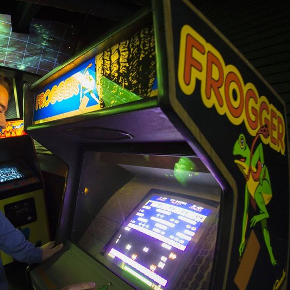

One thing I love doing in my free time is playing retro 80's games. Here are some of my favorites...
Frogger

The objective of Frogger is to assist frogs across a busy, multi-line highway, a highway median, an embankment and a
treacherous river. At each stage, there are unique challenges and obstacles for players to work around, including the
fact that Frogger has no physical defenses.